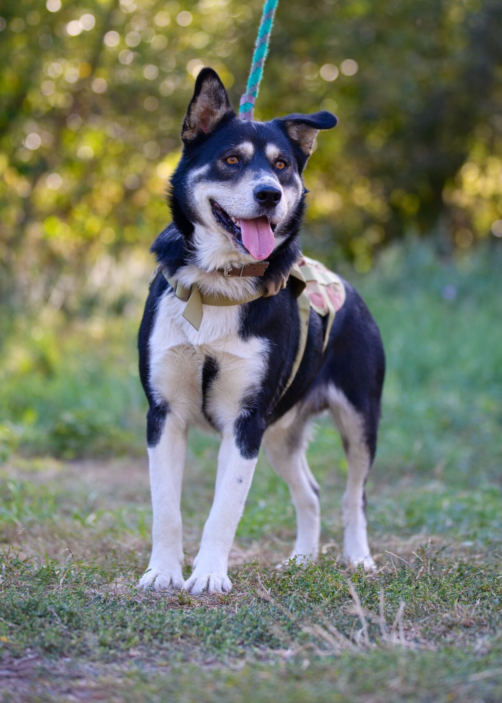
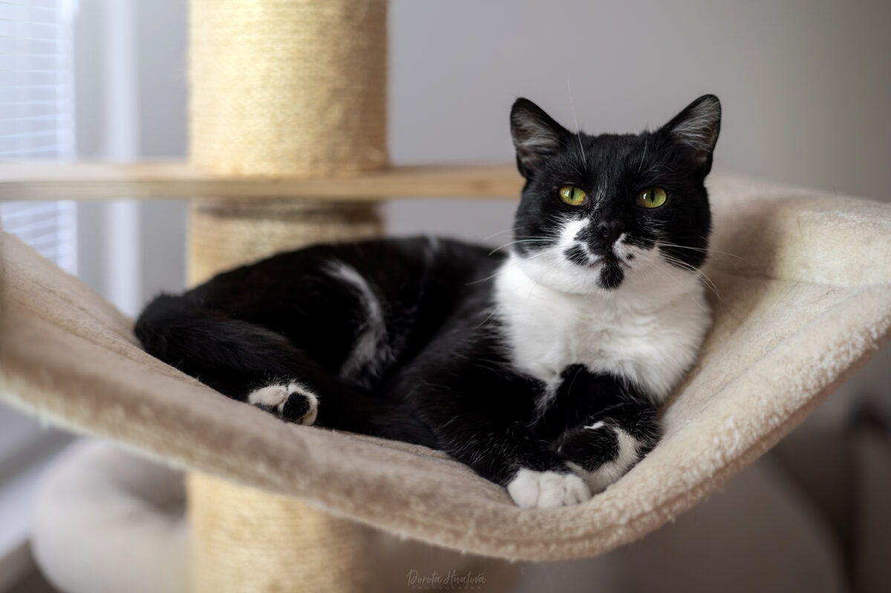
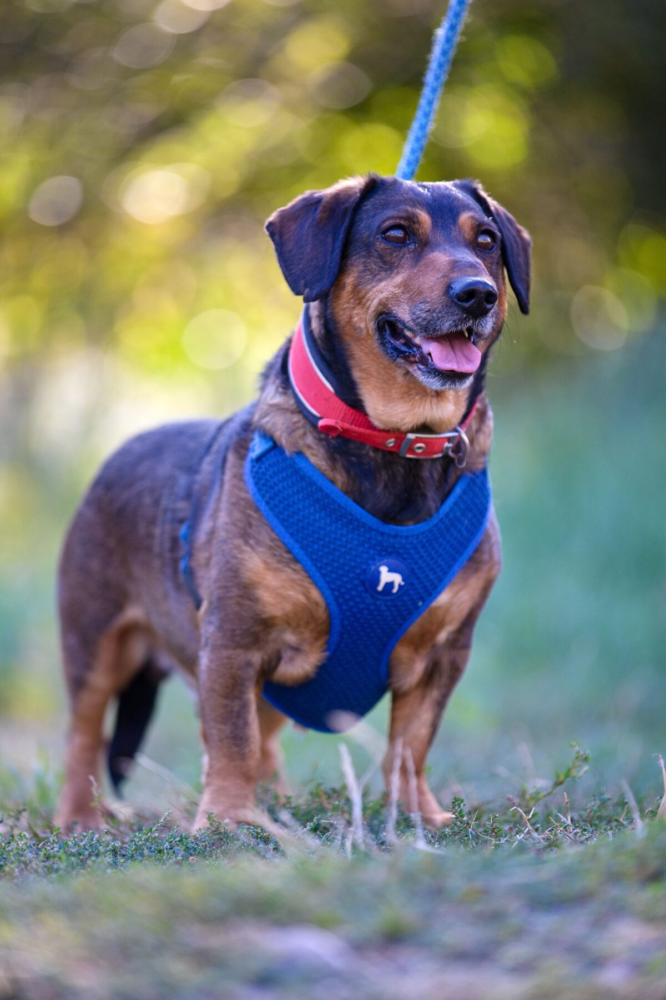
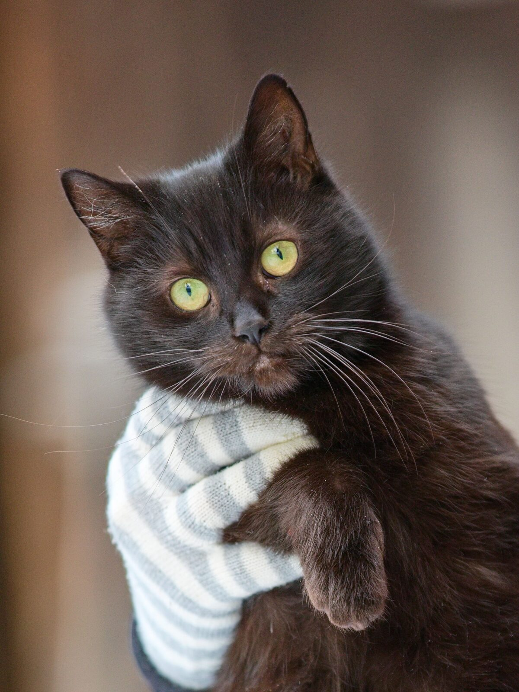
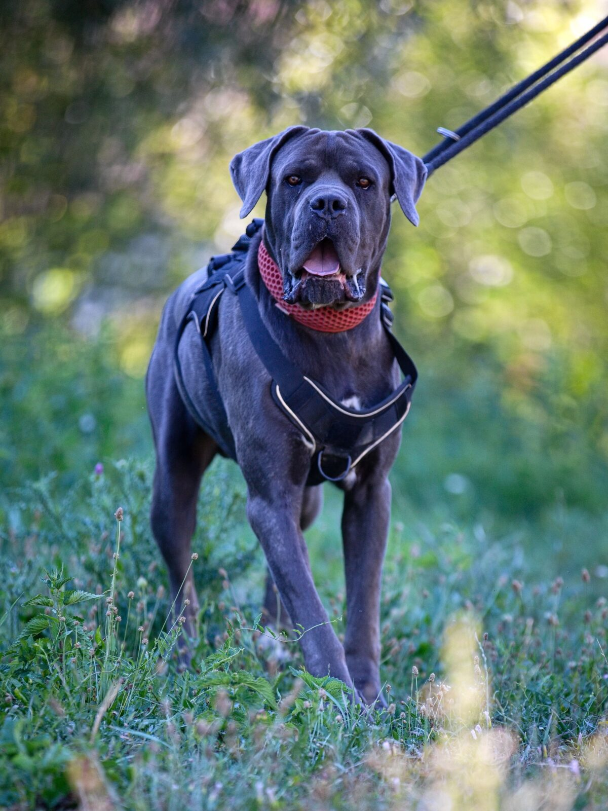
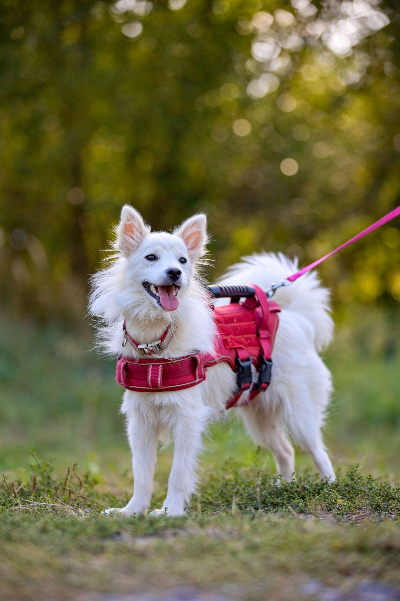

Útulok očami zvierat
Pozrite sa na svet očami našich psíkov a mačiek. Spoznajte ich príbehy, povahy aj to, čo ich robí šťastnými, a možno práve vy budete ich novou rodinou.

Rexík je veselý a energický 3-ročný kríženec, ktorý miluje dlhé prechádzky a aportovanie. Je veľmi múdry a rýchlo sa učí novým povelom. Hľadá aktívnu rodinu, ktorá s ním bude tráviť veľa času v prírode a poskytne mu láskyplný domov.
Zistiť viac
Luna je elegantná, pokojná mačička. Najradšej prespí polovicu dňa na vyhriatom parapete alebo sa nechá hladkať na gauči. Je vhodná aj do tichšieho bytu k starším ľuďom, nepotrebuje toľko pozornosti, no za trochu lásky sa odvďačí hlasným pradením.
Zistiť viac
Bruno je starší pán (8 rokov), no srdce má stále plné radosti. Už nemá toľko energie na dlhé túry, ale miluje spoločnosť ľudí a pomalé prechádzky parkom. Je veľmi tolerantný, znáša sa s inými zvieratami a bude dokonalým spoločníkom na pokojné večery.
Zistiť viac
Líza rada spí, ale nepohrdne aj túlenie sa pod dekou.

Buddy má dobré srdce a miluje hru z detmi.

Ela hľada nový domv, pomôžte jej ho najsť.